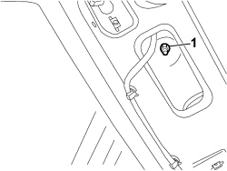
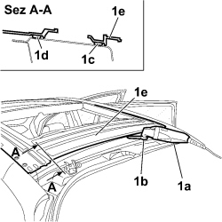
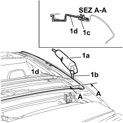
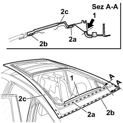
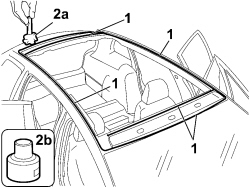
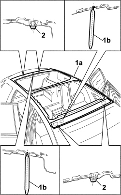
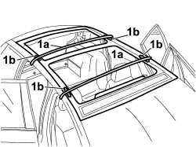

7030B90 SLIDING ROOF FRAME - R R
- Path
- Procedures > 70 FITTINGS > 7030 SUN ROOF/GLASS PANEL > 7030B SLIDING ROOF > 7030B90 SLIDING ROOF FRAME - R R
- Kind
- repair procedure (removal / refitting; the operation number is the code)
- Applies to
- all engines; all production periods
- Interactive page
- https://sloeber94.github.io/elrnDB-fCrm/en/#/194000992
Applies to: all engines; all production periods
 Removing
Removing
 Refitting
Refitting- Turn the ignition key to the OFF position.
- Disconnect the negative battery terminal.
Description | Connector | |
|---|---|---|
BATTERY |
(Both)
Op. 7065C33 SUN BLIND WITH COURTESY MIRROR AND COURTESY LIGHT ONE LH OR RH R R
(all)
Op. 7065C30 GRAB HANDLE (ONE) LEFT, RIGHT OR CENTRE PASSENGER COMPARTMENT INTERIOR - R.R
Op. 7040E51 FRONT MODULAR COURTESY LIGHT ASSEMBLY - R R FOR VERSIONS WITH SUN-ROOF
Op. 7040E46 REAR COURTESY LIGHT ASSEMBLY - R R
Op. 7040B26 LOAD PLATFORM COVER BLIND - R+R
FOR VERSIONS WHERE IT IS FITTED
Op. 7040B42 PROTECTION GRILLE FOR ANIMAL TRANSPORT - R and R
(Both)
Op. 7040B44 PROTECTIVE GRILL ATTACHMENT ONE R R
FOR ALL VERSIONS
(Both)
Op. 7040H30 FRONT PILLAR TRIM (ONE), LEFT OR RIGHT - R.R.
(Both)
Op. 7040L44 REAR DOOR RUNNING BOARD (ONE), LEFT OR RIGHT - R.R.
(Both)
Op. 7040H36 CENTRE PILLAR LOWER ELEMENT (ONE), LEFT OR RIGHT - R.R
(Both)
Op. 7040H38 CENTRE PILLAR UPPER ELEMENT (ONE), LEFT OR RIGHT - R.R
(Both)
Op. 7040H42 REAR PILLAR TRIM (ONE), LEFT OR RIGHT- R.R
(Both)
Op. 7040H50 REAR PANEL (ONE), LEFT OR RIGHT - R.R
Op. 7040H16 ROOF PANEL LINING FOR VERSIONS WITH SUN ROOF - R.R
Op. 5570T61 MULTI-FUNCTION AERIAL - R R
Op. 7030B18 SLIDING ROOF GLASS PANEL - R+R
Op. 7030B42 SLIDING ROOF SPOILER - R+R
Op. 7030B22 GLASS SEAL - R+R WITH GLASS REMOVED
Op. 7030B49 SLIDING ROOF FRONT ANTI-WIND NOISE GASKET - R R
Op. 7030B51 SLIDING ROOF CENTRAL ANTI-WIND NOISE GASKET - R R
Op. 7030B41 SLIDING ROOF ASSEMBLY OUTER MOULDING (ONE) - R R
Op. 7030B91 SLIDING ROOF ASSEMBLY CENTRAL CROSS MEMBER - R R
Op. 7030B37 FIXED GLASS BLIND - R.R
Op. 7030B74 SUN-ROOF CABLE LOOM - R.R OR REPLACE
Op. 7030B78 SUN ROOF BLIND MOVEMENT MOTOR - R.R.
Op. 7030B70 SUN ROOF MOVEMENT MOTOR - R+R
Op. 7030B47 SLIDING ROOF CABLE GUIDE DEVICE - R.R
Op. 7030B39 SLIDING CURTAIN CABLE GUIDE DEVICE - R R
Op. 7030B92 REAR SLIDING ROOF CROSS MEMBER - R R
Op. 7030B50 SUN ROOF SLIDING GUIDE (ONE), LH OR RH - R.R
Op. 7030B53 SLIDING ROOF GLASS SUPPORT ROD (ONE) RH OR LH - R R
Op. 7030B48 SLIDING ROOF REAR FIXED GLASS PANEL - R.R.
Op. 7030B93 FRONT SLIDING ROOF - R R
Op. 7030B94 REAR SLIDING ROOF - R R
1. Working from inside the vehicle, unscrew both front nuts and both rear nuts.

Applies to: all engines; all production periods
1. Use a Fein vibrating cutter (1a) and Fein cutting blade (1b) to cut the sealant (1c) and cut the second sealant strip (1d) on the roof (1e), still working from the rear.

Applies to: all engines; all production periods
1. Carry out this operation on both sides of the vehicle:
Use a Fein vibrating cutter (1a) and Fein cutting blade (1b) to cut the sealant at the side (1c) along the roof (1d).

Applies to: all engines; all production periods
1. Working from inside the car and using a Fein vibrating cutter and Fein cutting blade (63502103010, cut and remove the spoiler fastening area to free up the working area.
2. Working from inside the vehicle, cut the first sealant section (2a), cut the sealant (2b), still working from the rear, and remove the roof (2c).

Applies to: all engines; all production periods
Refitting
Removing1. Use appropriate equipment to cut and level the sealant strip to leave a thickness between 0.25 and 1 mm in the frame housing compartment.
Thoroughly clean the frame housing compartment on the body with compressed air and degrease thoroughly with heptane
Component | Type | Description | Classification | Qty. | Validity |
|---|---|---|---|---|---|
Sliding roof fixed transparent housing | - | Activator for PUR | - | - |
Apply the glass adhesion promoter (primer) to the site of the old sealant strip using the wick supplied in the Kit.

Applies to: all engines; all production periods
- Clean the new roof using heptane.
- Use a pneumatic gun to extrude a sealant strip to the site of the old strip in the frame compartment.
Component | Type | Description | Classification | Qty. | Validity |
|---|---|---|---|---|---|
Sliding Roof Fixed Glass | Sealant | Product n° 71711976 | - | - |
1. Raise the frame (1a) and position it correctly so that it is fitted fully home and check the position of the locating pins (1b) and fastenings (1c).

Applies to: all engines; all production periods
1. Use belts (1a) and spacers (1b) to compress chassis (1c) in position.

Applies to: all engines; all production periods
- Remove the centering pins.
Op. 7030B94 REAR SLIDING ROOF - R R
Op. 7030B93 FRONT SLIDING ROOF - R R
Op. 7030B48 SLIDING ROOF REAR FIXED GLASS PANEL - R.R.
Op. 7030B53 SLIDING ROOF GLASS SUPPORT ROD (ONE) RH OR LH - R R
Op. 7030B50 SUN ROOF SLIDING GUIDE (ONE), LH OR RH - R.R
Op. 7030B92 REAR SLIDING ROOF CROSS MEMBER - R R
Op. 7030B39 SLIDING CURTAIN CABLE GUIDE DEVICE - R R
Op. 7030B47 SLIDING ROOF CABLE GUIDE DEVICE - R.R
Op. 7030B78 SUN ROOF BLIND MOVEMENT MOTOR - R.R.
Op. 7030B74 SUN-ROOF CABLE LOOM - R.R OR REPLACE
Op. 7030B37 FIXED GLASS BLIND - R.R
Op. 7030B91 SLIDING ROOF ASSEMBLY CENTRAL CROSS MEMBER - R R
Op. 7030B51 SLIDING ROOF CENTRAL ANTI-WIND NOISE GASKET - R R
Op. 7030B49 SLIDING ROOF FRONT ANTI-WIND NOISE GASKET - R R
Op. 7030B22 GLASS SEAL - R+R WITH GLASS REMOVED
Op. 7030B42 SLIDING ROOF SPOILER - R+R
Op. 7030B18 SLIDING ROOF GLASS PANEL - R+R
Op. 5570T61 MULTI-FUNCTION AERIAL - R R
Op. 7040H16 ROOF PANEL LINING FOR VERSIONS WITH SUN ROOF - R.R
(Both)
Op. 7040H50 REAR PANEL (ONE), LEFT OR RIGHT - R.R
(Both)
Op. 7040H42 REAR PILLAR TRIM (ONE), LEFT OR RIGHT- R.R
(Both)
Op. 7040H38 CENTRE PILLAR UPPER ELEMENT (ONE), LEFT OR RIGHT - R.R
(Both)
Op. 7040H36 CENTRE PILLAR LOWER ELEMENT (ONE), LEFT OR RIGHT - R.R
Both
Op. 7040L44 REAR DOOR RUNNING BOARD (ONE), LEFT OR RIGHT - R.R.
(Both)
Op. 7040H30 FRONT PILLAR TRIM (ONE), LEFT OR RIGHT - R.R.
FOR VERSIONS WHERE IT IS FITTED
(Both)
Op. 7040B44 PROTECTIVE GRILL ATTACHMENT ONE R R
Op. 7040B42 PROTECTION GRILLE FOR ANIMAL TRANSPORT - R and R
FOR ALL VERSIONS
Op. 7040B26 LOAD PLATFORM COVER BLIND - R+R
Op. 7040E46 REAR COURTESY LIGHT ASSEMBLY - R R
Op. 7040E51 FRONT MODULAR COURTESY LIGHT ASSEMBLY - R R FOR VERSIONS WITH SUN-ROOF
(All)
Op. 7065C30 GRAB HANDLE (ONE) LEFT, RIGHT OR CENTRE PASSENGER COMPARTMENT INTERIOR - R.R
(Both)
Op. 7065C33 SUN BLIND WITH COURTESY MIRROR AND COURTESY LIGHT ONE LH OR RH R R
- Connect the negative battery terminal.
Description | Connector | |
|---|---|---|
BATTERY |
Topics linked from this page (36)
- 5570T61 MULTI-FUNCTION AERIAL - R R
- 7030B18 SLIDING ROOF GLASS PANEL - R+R
- 7030B22 GLASS SEAL - R+R WITH GLASS REMOVED
- 7030B37 FIXED GLASS BLIND - R.R
- 7030B39 SLIDING CURTAIN CABLE GUIDE DEVICE - R R
- 7030B41 SLIDING ROOF ASSEMBLY OUTER MOULDING (ONE) - R R
- 7030B42 SLIDING ROOF SPOILER - R+R
- 7030B47 SLIDING ROOF CABLE GUIDE DEVICE - R.R
- 7030B48 SLIDING ROOF REAR FIXED GLASS PANEL - R.R.
- 7030B49 SLIDING ROOF FRONT ANTI-WIND NOISE GASKET - R R
- 7030B50 SUN ROOF SLIDING GUIDE (ONE), LH OR RH - R.R
- 7030B51 SLIDING ROOF CENTRAL ANTI-WIND NOISE GASKET - R R
- 7030B53 SLIDING ROOF GLASS SUPPORT ROD (ONE) RH OR LH - R R
- 7030B70 SUN ROOF MOVEMENT MOTOR - R+R
- 7030B74 SUN-ROOF CABLE LOOM - R.R OR REPLACE
- 7030B78 SUN ROOF BLIND MOVEMENT MOTOR - R.R.
- 7030B91 SLIDING ROOF ASSEMBLY CENTRAL CROSS MEMBER - R R
- 7030B92 REAR SLIDING ROOF CROSS MEMBER - R R
- 7030B93 FRONT SLIDING ROOF - R R
- 7030B94 REAR SLIDING ROOF - R R
- 7040B26 LOAD PLATFORM COVER BLIND - R+R
- 7040B42 <x>PROTECTION GRILLE FOR ANIMAL TRANSPORT - R&R</x>
- 7040B44 PROTECTIVE GRILL ATTACHMENT ONE R R
- 7040E46 REAR COURTESY LIGHT ASSEMBLY - R R
- 7040E51 FRONT MODULAR COURTESY LIGHT ASSEMBLY - R R FOR VERSIONS WITH SUN-ROOF
- 7040H16 ROOF PANEL LINING FOR VERSIONS WITH SUN ROOF - R.R
- 7040H30 FRONT PILLAR TRIM (ONE), LEFT OR RIGHT - R.R.
- 7040H36 CENTRE PILLAR LOWER ELEMENT (ONE), LEFT OR RIGHT - R.R
- 7040H38 CENTRE PILLAR UPPER ELEMENT (ONE), LEFT OR RIGHT - R.R
- 7040H42 REAR PILLAR TRIM (ONE), LEFT OR RIGHT- R.R
- 7040H50 REAR PANEL (ONE), LEFT OR RIGHT - R.R
- 7040L44 REAR DOOR RUNNING BOARD (ONE), LEFT OR RIGHT - R.R.
- 7065C30 GRAB HANDLE (ONE) LEFT, RIGHT OR CENTRE PASSENGER COMPARTMENT INTERIOR - R.R
- 7065C33 SUN BLIND WITH COURTESY MIRROR AND COURTESY LIGHT ONE LH OR RH R R
- 7210E56 R.R. TAILGATE
- A001 BATTERY